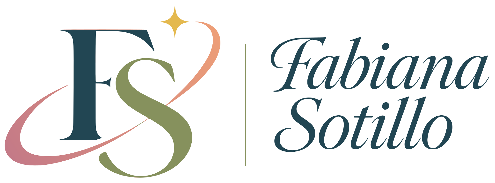
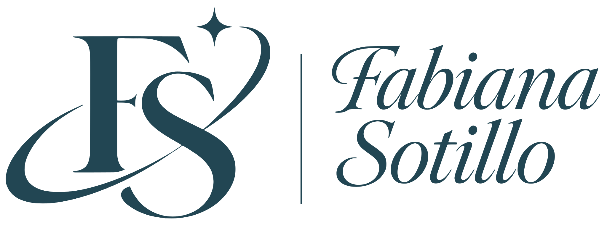
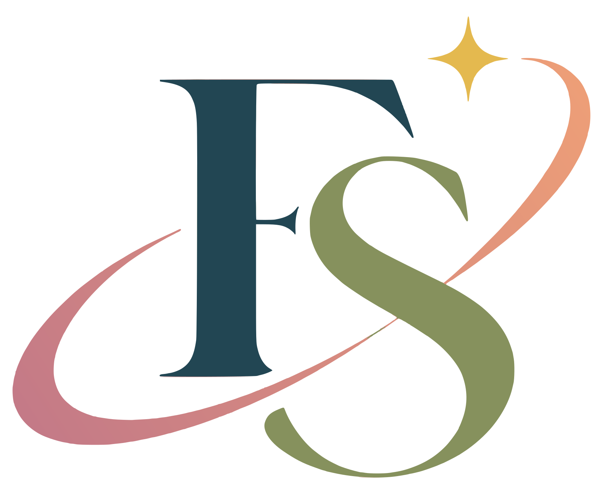

Interfaces que se entienden a la primera.
Una base profunda y serena (azul bosque y neutros cálidos) con acentos vivos que guían la acción. Así se ven y se sienten todas las aplicaciones de Fabiana Sotillo: profesionales, amigables y fáciles de aprender.
Intuitiva
Un solo botón rosa de acción por pantalla. El usuario siempre sabe qué hacer después.
Amigable
Tonos naturales, esquinas redondeadas y mensajes en tono cercano.
Dinámica
Micro-interacciones suaves y acentos con personalidad en los momentos clave.
Logotipo
Monograma FS con órbita y chispa, más el nombre en caligrafía. Todos los archivos son SVG vectoriales en assets/logo/.

Desarrollo · Diseño · Soluciones
Anatomía
- F en Blackthorn Berry
#224653: estructura y solidez. - S en Willow Leaf
#86915D: cercanía y naturalidad. - Órbita en degradado
#C47A87 → #ED9F77: movimiento y calidez. - Chispa en
#E4B94F: la idea, el detalle que brilla. - Nombre en caligrafía vectorial Blackthorn, con filete vertical Willow.
Área de protección y tamaño mínimo
- x = ancho de la F. Deja al menos x libre alrededor del logotipo.
- Mínimo horizontal: 160 px en pantalla · 40 mm en impresión.
- Monograma: 24 px. Por debajo, usa el favicon simplificado.
- El eslogan solo se muestra a partir de 280 px de ancho.
Versiones
Color · horizontal
Versión principal. Sobre fondos claros (Hawthorn, blanco, Silver Birch).
Descargar SVG

Monocromo Blackthorn
Impresión a una tinta, sellos, documentos y fondos de color claro.
Descargar SVG

Negativo (blanco)
Sobre Blackthorn, fotografías oscuras o cabeceras de color.
Descargar SVG

Monograma
Cuando el nombre ya aparece cerca: perfiles, firmas, pie de página.
Descargar SVG


Usos incorrectos
✕ Deformarlo o estirarlo.
✕ Girarlo o inclinarlo.
✕ Cambiar los colores.
✕ Ponerlo sobre un fondo sin contraste.
✕ Añadir sombras o efectos.
✕ Usarlo por debajo del tamaño mínimo.
✕ Rehacer el nombre con otra tipografía.
✕ Sobre fondos saturados o degradados.
1. Color y roles de interfaz
Pulsa cualquier color para copiar su variable. En el código usa siempre el token semántico, no el HEX.
Estructura · colores base (columna izquierda)
Acciones y estados · acentos (columna derecha)
Proporción recomendada 60 · 30 · 10
El 10% de acentos se reparte: Foxglove para la acción principal y el resto (Dog Rose, Copper, Honeysuckle, Gorse, estados) solo donde aportan significado.
2. Reglas de uso del color
Para mantener la interfaz clara aunque la paleta sea rica.
✔ Sí
- Un único botón Foxglove (CTA) visible por pantalla.
- Texto en Blackthorn sobre Hawthorn, blanco o colores claros.
- Color = significado: verde confirma, amarillo avisa, rojo alerta.
- Usar Copper, Gorse y Honeysuckle con moderación, como «chispa».
- Acompañar el color con icono o texto (no depender solo del color).
✘ No
- Texto blanco sobre Cowslip, Honeysuckle o Dog Rose (usa Blackthorn).
- Texto Willow, Gorse o Rowan (claro) sobre blanco: no llega a contraste.
- Mezclar más de 3 acentos en el mismo componente.
- Dos CTA Foxglove compitiendo en la misma vista.
- Fondos de página en colores de acento.
3. Combinaciones y contraste (WCAG)
Mínimo 4,5:1 para texto normal y 3:1 para texto grande (≥ 18,7 px en negrita) y componentes.
| Texto | Fondo | Ratio | Uso |
|---|---|---|---|
| Blackthorn | Hawthorn | 9,55 | AAA · texto base |
| Blackthorn | Silver Birch | 7,31 | AAA |
| Blanco | Blackthorn | 10,15 | AAA · sidebar, cabeceras |
| Blanco | Ivy Bloom | 6,61 | AA · éxito, enlaces |
| Blanco | Foxglove (relleno CTA) | 4,96 | AA · botón principal (hover Foxglove Deep: 6,67) |
| Blanco | Foxglove Bell original | 4,35 | Solo texto grande · para texto usa el relleno #C73871 |
| Blanco | Copper Beech | 4,49 | AA texto grande · iconos y gráficos, no botones |
| Blackthorn | Cowslip | 5,88 | AA · avisos |
| Blackthorn | Honeysuckle | 4,75 | AA |
| Blackthorn | Dog Rose | 4,82 | AA · botón secundario |
| Blackthorn | Gorse Bloom | 4,23 | AA texto grande · etiquetas en negrita |
| Rowan Berry | Blanco | 3,56 | No para texto → usa --danger-text |
| Willow Leaf | Blanco | 3,38 | No para texto → solo decorativo |
4. Tipografía
Display: Instrument Serif Cursiva (solo nombre corporativo, nombres de app y titulares de inicio) · Interfaz: Inter · Código: JetBrains Mono.
Fabiana Sotillo
Nombre de la app
Panel de control
Tus proyectos recientes
Configuración de cuenta
Texto de lectura continua. Frases cortas, verbos claros y un tono cercano: «Guarda tus cambios» en lugar de «Proceder al almacenamiento».
Etiquetas, tablas y ayuda contextual.
Notas al pie y metadatos.
const theme = { cta: 'var(--cta)' };5. Componentes
Botones, etiquetas, avisos y tarjetas ya adaptados a la paleta.
Botones
Jerarquía: Foxglove (1 por pantalla) → Dog Rose → Estructural → Fantasma. Destructivo solo con confirmación.
Etiquetas (badges)
Progreso
68% · degradado Copper → Foxglove: cálido y con sensación de avance.
Avisos
6. Formularios
Foco visible en Foxglove, errores explicados con texto.
7. Todo junto: pantalla de ejemplo
Estructura oscura, contenido claro, un único CTA y acentos con sentido.
Tus proyectos Nuevo
Web corporativa
Actualizado hoy
App de tareas ♥
Hace 3 días
8. Tokens CSS
Archivo completo en css/tokens.css. Cópialo en cada proyecto nuevo.
:root {
/* Estructura */
--bg: #F9F8F4;
--surface: #FFFFFF;
--border: #D5DCDF;
--text: #224653;
--structure: #224653;
--nature: #86915D;
/* Acciones */
--cta: #C73871; /* Foxglove Bell (relleno) */
--cta-hover: #A82A5C;
--secondary: #DCA3B9; /* Dog Rose */
--link: #40654A;
/* Estados */
--success: #40654A;
--warning: #E4C259;
--danger: #E65855;
--danger-text: #C23B38;
/* Personalidad */
--highlight: #C4A524;
--delight: #C45524; /* Copper Beech */
--warm: #ED9F77; /* Wild Honeysuckle */
--font-display: 'Instrument Serif', serif; /* solo marca y titulares */
--font-sans: 'Inter', system-ui, sans-serif;
--radius-md: 0.75rem;
--radius-lg: 1rem;
}